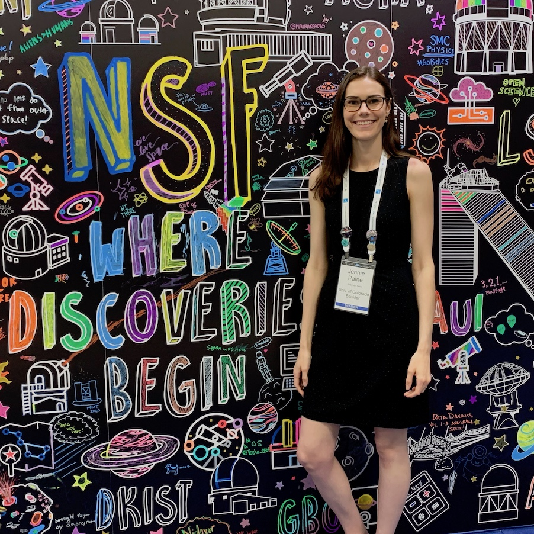
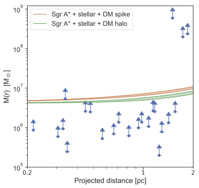
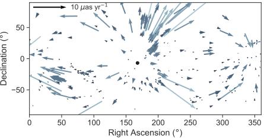
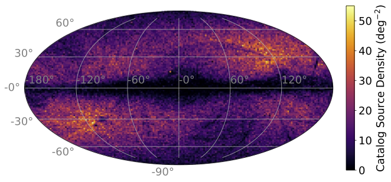

I am a Postdoctoral Research Associate at the University of Maryland, Baltimore County and
NASA Goddard Space Flight Center, located in Greenbelt MD.
My current research is in cosmology using the Wide Field Instrument of the
upcoming Roman Space Telescope.
I earned my Ph.D. in 2023 from the University of Colorado Boulder Department of Astrophysics and
Planetary Sciences, where I was an NSF Graduate Research Fellow. Before graduate school, I received
my B.S. in Physics from Virginia Tech.
My research interests in cosmology include the growth of cosmic structure,
dark energy, and expansion. At NASA Goddard Space Flight Center, I work on
projects related to the Wide Field Instrument of the Nancy Grace Roman Space Telescope, which will
measure the growth and structure of the universe using multiple cosmological probes.
Outside of Roman-related efforts, my research has broadly encompassed high precision measurements of astrophysical
motions as probes of cosmology and gravity. One area of interest for me is real-time cosmology
using correlated proper motions of galaxies. Both cosmological and observer-induced effects
may create correlated proper motions, and much of my work has involved simulating these effects
and developing methods for cosmological measurements with proper motions using large astrometric
survey missions like Gaia. I have also been
using radio observations of SiO masers (microwave lasers in stellar atmospheres) to trace
the motions of stars in orbit around a few parsecs from the Galactic Center. Since this region
is affected by dust obscuration and crowding, masers observed in radio are unique, high resolution
tracers of the gravitational profile.
Publications
You can find a full list of my publications in
my CV
or on ADS.
Here are summaries of my recent first-author papers.

3D Kinematics of Stellar SiO Masers in the Galactic Center
In this paper, I measured high precision 3D velocities and acceleration
constraints of stellar masers (microwave lasers)
in the inner several parsec of the Galactic Center using over two decades of
observations from the Very Large Array (VLA) and
Atacama Large Millimeter/submillimeter Array (ALMA). These masers are unique probes
of the gravitational profile in a region of the Galaxy that is
highly affected by stellar crowding and dust obscuration at shorter wavelengths, and
where there is much uncertainty about the distribution of dark matter.
We found that the kinematics were generally in line with expectations for stars in orbit
about the Galactic Center. Notably, there are several stars with anomalously large velocities
or accelerations, requiring further observations to constrain the systemic stellar motion as
opposed to inherent noise of the maser source.

Secular Extragalactic Parallax: Measurement Methods and Predictions for Gaia
This paper explores the prospects of measuring the motion of the solar system with
respect to an extragalactic rest frame using dipolar correlated proper motions of galaxies, a signal
known as secular parallax due to the distance dependence of the amplitude of the signal. A statistical
detection of the secular parallax amplitude as a function of distance
could be used to constrain the local Hubble parameter.
We selected nearby galaxies detected by the Gaia astrometric mission with
redshift independent distance measurements from Cosmicflows-3, and measured
an upper limit on the secular parallax dipole in Gaia Data Release 2.
We also simulated the secular parallax signal that will be detectable by Gaia's
end of mission. We found that while peculiar proper motions of galaxies due to gravitational
interactions with large-scale overdensities
offset the total dipole signal, one may recover secular parallax using the CMB dipole direction
as a prior on the direction of motion.

The Gaia-WISE Extragalactic Astrometric Catalog
This work was about identifying AGN detected by Gaia and forecasting the sensitivity
of their proper motions for detecting low-multipole correlated motions. We identified >500,000
AGN in the first Gaia data release using WISE two-color criteria, and found that
the catalog has very low (0.2%) stellar contamination, an important metric due to the relatively large
proper motions of stars in our galaxy. By simulating the end-of-mission proper motions of the catalog,
we found that Gaia proper motions will constrain the isotropy of the Hubble expansion to about 2%.
This catalog was also used for a prediction of a Gaia astrometry-based limit on the stochastic gravitational wave
background (Darling, Truebenbach, & Paine 2018).
It is a great privilege to study astronomy professionally, so
I believe it is neccessary and personally to engage with the community through education and service.
These are some highlights of my teaching, outreach, and service experiences.
Teaching
I was the instructor for ASTR 1000, an introductory astronomy course, at CU Boulder during Summer 2020.
I wrote the syllabus and developed class materials for remote learning.
Since astronomy courses are an excellent gateway to understanding
the broader principles of science, I designed a
unit on scientific literacy for the primarily non-STEM major students
taking the class.
In 2019, I participated in the ISEE Professional Development Program (PDP),
which is an intensive program on inclusive education and professional development training.
With my PDP team, I designed and taught an
inquiry-based workshop on buoyancy in nature for incoming freshmen at CU Boulder.
I have also engaged in public outreach and education since
undergrad, where I ran sidewalk astronomy events on my college's campus.
In Boulder, I educated younger learners on topics like black holes,
the EM spectrum, and the history of astronomy through volunteering
at the Sommers-Bausch Observatory and at a local elementary school.
Service
Since 2022, I have been a member of the
NRAO/GBO Users Committee,
charged with advising NRAO and GBO on matters affecting users of the observatories.
As a grad student, I was elected to several committees in the Astrophysics
and Planetary Sciences Department, including graduate admissions, faculty hiring,
comprehensive exams, and graduate cirriculum and concerns. One of the most rewarding
outcomes of my committee service at CU was contributing to the design of new
annual progress reviews for PhD candidates and pushing for a structure that
would be supportive and productive for students.